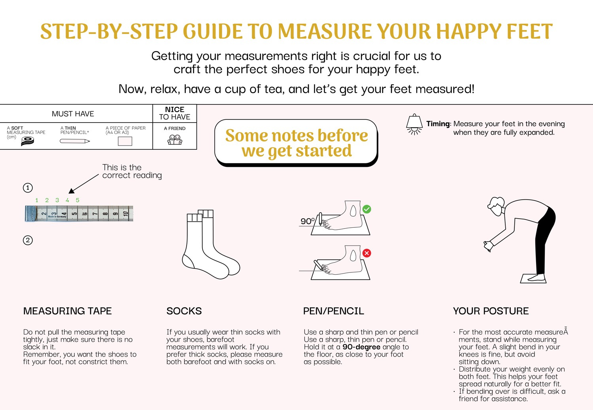
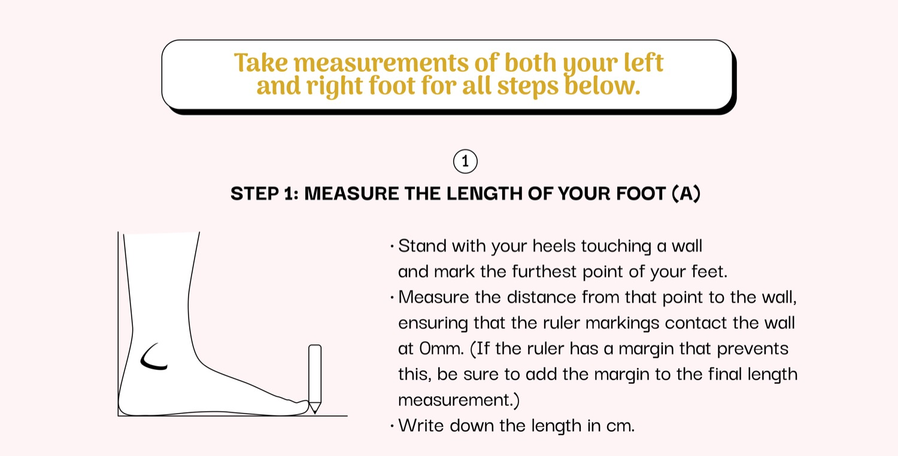
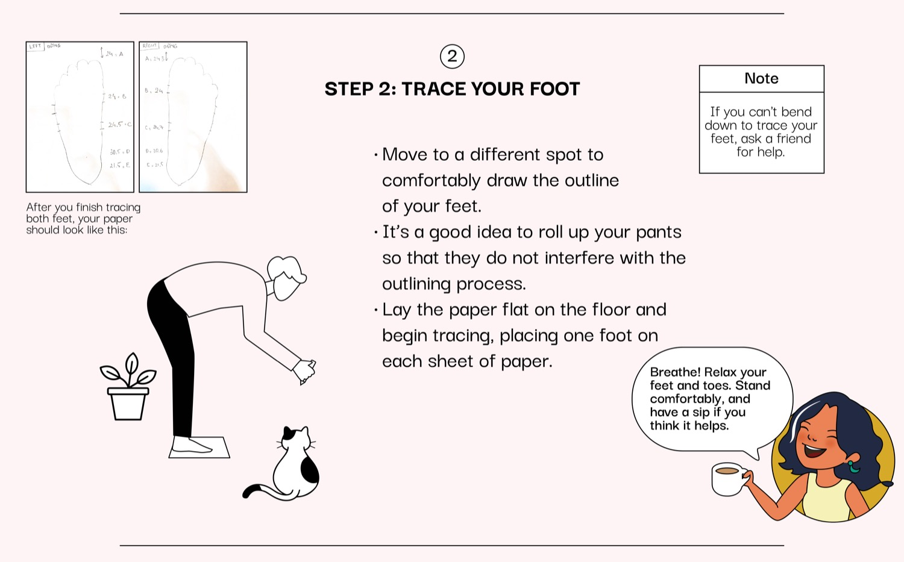
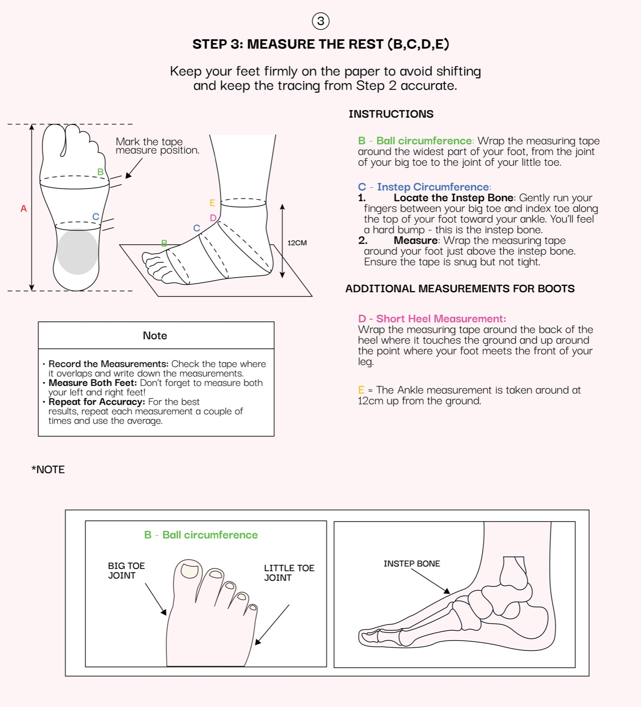
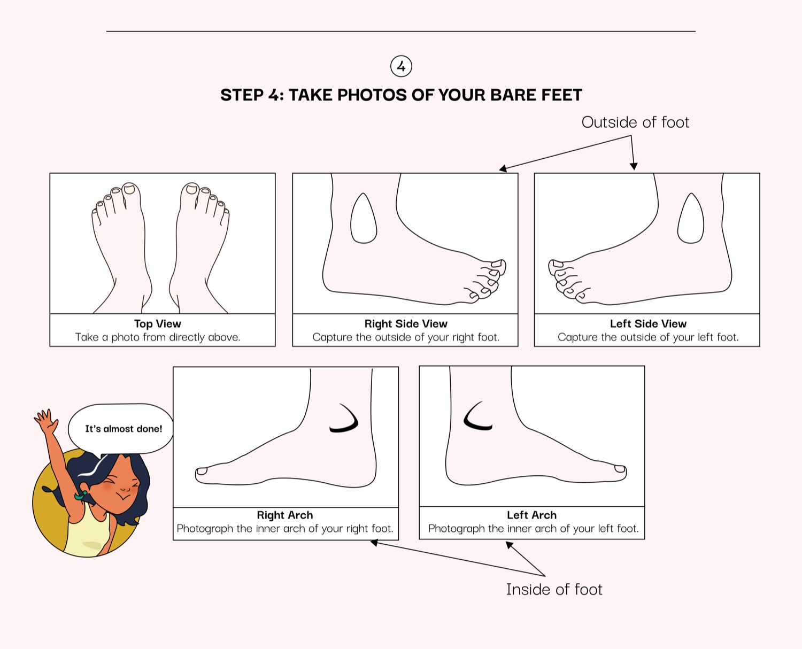
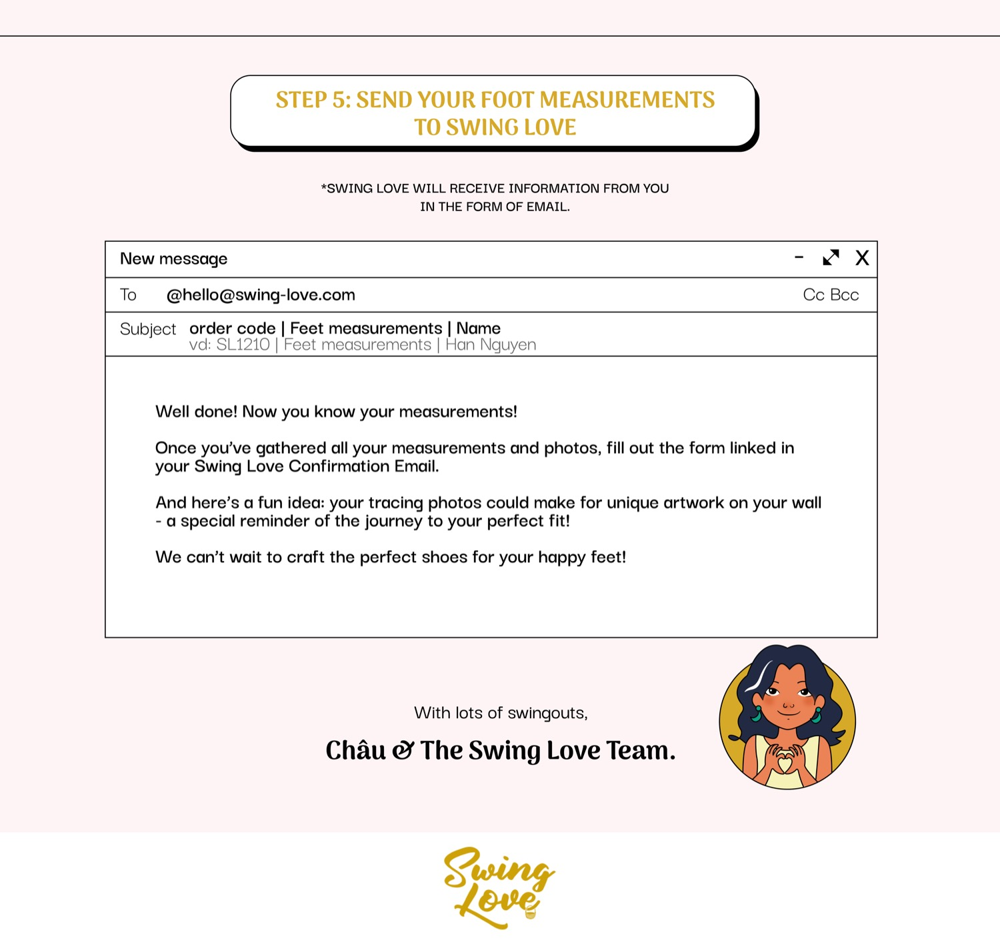

Ái says
Breathe. Relax your feet and toes, stand comfortably — and have a sip of that tea if it helps.
Getting your measurements right is what lets us craft the pair for your feet — and only yours. Now, relax, make a cup of tea, and let’s begin.
Everything we make is made to order, and much of it made to measure. That means your measurements come first — before the leather, before the last, before anything. Take your time with it. The better the measurements, the better the shoe.
Measure in the evening, when your feet are at their fullest. And measure both feet — most of us are not perfectly symmetrical. Where the two differ, we build for the larger.



Breathe. Relax your feet and toes, stand comfortably — and have a sip of that tea if it helps.



Once you have your measurements and photos, write to us and we’ll take it from there. Unsure at any step? We’ll walk you through it — most people find it easier than they feared.